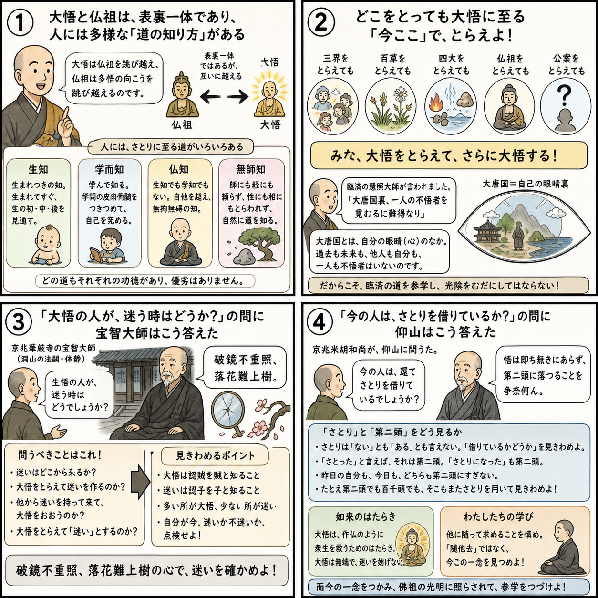

七十五巻 巻一覧
正法眼藏第10 大悟
本紹介ページの導入・語彙・深掘り・クイズは tools/regen_volume_intro_from_corpus.py が OpenAI API で生成したものです（入力は当巻の原文からの短い抜粋のみ）。内容はモデル出力のため、重要箇所は必ず原文・教本と照合してください。
出典: https://shomonji.or.jp/zazen/doc/genzou.html
原文・現代語訳の全文は 全文ページを参照してください。
この巻の紹介（導入）
佛佛の大道、つたはれて綿密なり。祖祖の功業、あらはれて平展なり。このゆゑに大悟現成し、不悟至道し、省悟弄悟し、失悟放行す。これ佛祖家常なり。
擧拈する使得十二時あり、抛却する被使十二時あり。さらにこの關棙子を跳出する弄泥團もあり、弄精魂もあり。大悟より佛祖かならず恁麼現成する參學を究竟すといへども、大悟の渾悟を佛祖とせるにはあらず、佛祖の渾佛祖を渾大悟なりとにはあらざるなり。
語彙の足場
- 大悟：仏教における深い悟りのこと。全ての存在の真理を理解し、自己と他者の境界を超えた状態を指す。
- 不悟：悟りに至らない状態。真理を理解できず、迷いの中にいることを示す。
- 生知：生まれながらに持つ知識や理解。経験を通じて得られる知識とは異なる。
- 學知：学びによって得られる知識。教育や学習を通じて獲得される理解を指す。
- 無師知：師匠や教えに依存せずに得られる知識。自己の内面から湧き出る理解を表す。
原文（要点の抜粋）
当巻の冒頭付近からの短い抜粋です。長い引用は載せていません。 全文は全文ページを参照してください。出典はリポジトリ内 doc/正法眼蔵.txt です。原文の参照元: https://shomonji.or.jp/zazen/doc/genzou.html
佛佛の大道、つたはれて綿密なり。祖祖の功業、あらはれて平展なり。このゆゑに大悟現成し、不悟至道し、省悟弄悟し、失悟放行す。これ佛祖家常なり。擧拈する使得十二時あり、抛却する被使十二時あり。さらにこの關棙子を跳出する弄泥團もあり、弄精魂もあり。大悟より佛祖かならず恁麼現成する參學を究竟すといへども、大悟の渾悟を佛祖とせるにはあらず、佛祖の渾佛祖を渾大悟なりとにはあらざるなり。佛祖は大悟の邊際を跳出し、大悟は佛祖より向上に跳出する面目なり。
しかあるに、人根に多般あり。
いはく、生知。これは生じて生を透脱するなり。いはゆるは、生の初中後際に體究なり。
いはく、學而知。これは學して自己を究竟す。いはゆるは、學の皮肉骨髓を體究するなり。
いはく、佛知者あり。これは生知にあらず、學知にあらず。自他の際を超越して、遮裏に無端なり、自他知に無拘なり。
いはく、無師知者あり。善知識によらず、經卷によらず、性によらず、相によらず、自を撥轉せず、他を囘互せざれども露堂堂なり。これらの數般、ひとつを利と認し、ふたつを鈍と認ぜざるなり。多般ともに多般の功業を現成するなり。
しかあれば、いづれの情無情か生知にあらざらんと參學すべし。生知あれば生悟あり、生證明あり、生修行あり。しかあれば、佛祖すでに調御丈夫なる、これを生悟と稱じきたれり。悟を拈來せる生なるがゆゑにかくのごとし。參飽大悟する生悟なるべし。拈悟の學なるゆゑにかくのごとし。
しかあればすなはち、三界を拈じて大悟す、百草を拈じて大悟す、四大を拈じて大悟す、佛祖を拈じて大悟す、公案を拈じて大悟す。みなともに大悟を拈來して、さらに大悟するなり。その正當恁麼時は而今なり。
臨濟院慧照大師云、大唐國裏、覓一人不悟者難得（大唐國裏、一人の不悟者を覓むるに難得なり）。
いま慧照大師の道取するところ、正脈しきたれる皮肉骨髓なり、不是あるべからず。
大唐國裏といふは自己眼睛裏なり。盡界にかかはれず、塵刹にとどまらず。遮裏に不悟者の一人をもとむるに難得なり。自己の昨自己も不悟者にあらず、他己の今自己も不悟者にあらず。山人水人の古今、もとめて不悟を要するにいまだえざるべし。學人かくのごとく臨濟の道を參學せん、虛度光陰なるべからず。
しかもかくのごとくなりといへども、さらに祖宗の懷業を參學すべし。いはく、しばらく臨濟に問すべし、不悟者難得のみをしりて、悟者難得をしらずは、未足爲是なり。不悟者難得をも參究せるといひがたし。たとひ一人の不悟者をもとむるには難得なりとも、半人の不悟者ありて面目雍容、巍巍堂堂なる、相見しきたるやいまだしや。たとひ大唐國裏に一人の不悟者をもとむるに難得なるを究竟とすることなかれ。一人半人のなかに兩三箇の大唐國をもとめこころみるべし。難得なりや、難得にあらずや。この眼目をそなへんとき、參飽の佛祖なりとゆるすべし。
図解（4コマ・AI生成）
教義の根拠は原文・出典に従い、漫画は比喩の補助に留めてください。

深掘り（読解の手掛かり）
- 大悟は自己と他者の境界を超えた理解であり、仏教における究極の目標である。
- 不悟の状態は、迷いや無知にとどまっていることを意味し、仏教徒はこれを克服することを目指す。
- 生知と學知は異なる概念であり、前者は生まれ持った理解、後者は学びによって得られる理解を示す。
- 無師知は、他者の教えに依存せずに自己の内面から得られる知識を指し、重要な悟りの一形態である。
確認（形成評価）
各設問の下の「採点」で正誤を表示します（ブラウザ内のみ。ログは送りません）。